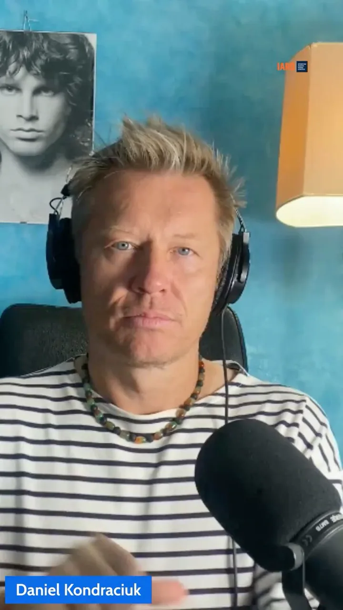

DavidYouTuber
Dla firm budowlanych i instalacyjnych
100 kwalifikowanych zapytań w 90 dni
Budujemy dopasowany system pozyskiwania klientów, dzięki któremu przestajesz liczyć wyłącznie na polecenia i zaczynasz przewidywać, skąd przyjdą kolejne zlecenia.
Albo zwrot wynagrodzenia za usługę. Warunki opisujemy jasno w umowie.
System pozyskiwania klientów Aktywny
Nowe zapytanie
Właściciel domu szuka wykonawcy
01Reklama
02Kwalifikacja
03Kontakt
EfektZapytanie trafia do Twojego zespołu
Problem nie leży w jakości Twojej pracy
Brak przewidywalnych zleceń blokuje rozwój dobrej firmy.
Polecenia są wartościowe, ale nie dają kontroli nad tempem wzrostu. Portale pośredniczące dostarczają przypadkowe kontakty, a pojedyncza kampania bez procesu szybko przestaje działać.
Potrzebujesz nie „więcej marketingu”, lecz systemu, który dociera do właściwych osób, odsiewa niedopasowane kontakty i pomaga Twojemu zespołowi szybko przejść od zapytania do rozmowy.
Właśnie taki system budujemyProces Kwalifikowanych Zapytań
Od uwagi do rozmowy — bez przypadkowych ruchów.
Każdy element dobieramy do Twojej branży, regionu, marży i sposobu sprzedaży. Technologia wspiera strategię, a nie ją zastępuje.
-
01
Strategia
Diagnozujemy punkt wyjścia
Poznajemy ofertę, najlepszych klientów, zasięg działania i realne możliwości obsługi nowych zleceń.
-
02
Kreacja
Budujemy komunikat i ścieżkę
Tworzymy reklamę, stronę lub formularz oraz ofertę, która odpowiada na konkretną potrzebę inwestora.
-
03
Pozyskanie
Uruchamiamy dopasowane źródła ruchu
Dobieramy kanały do kontekstu — od Meta Ads po inne rozwiązania, jeśli dają większą szansę na wynik.
-
04
Automatyzacja
Kwalifikujemy i dogrzewamy
Formularze, CRM, automatyczne SMS-y i e-maile pomagają oddzielić zainteresowanie od realnego zapytania.
-
05
Optymalizacja
Mierzymy i poprawiamy
Analizujemy jakość kontaktów, koszt pozyskania i dalszy etap sprzedaży, a następnie optymalizujemy system.
Szyte na miarę
Nie wciskamy Twojej firmy w gotowy lejek.
Ta sama taktyka nie zadziała identycznie dla instalatora klimatyzacji, producenta okien i firmy budującej domy. Dlatego zaczynamy od sytuacji biznesowej, a dopiero później wybieramy narzędzia.
Porozmawiajmy o Twojej sytuacjiPrzykładowa architektura
01Oferta i komunikatstrategia człowieka
02Reklama i landing pagedobór kanału
03Kwalifikacja zapytanialogika procesu
04CRM i follow-upautomatyzacja
05Aplikacja lub narzędziegdy ma sens
Końcowy zestaw zależy od kontekstu i ustaleń strategicznych.
Marketing × technologia
AI robi to, w czym jest dobre. Człowiek odpowiada za to, co ważne.
Wykorzystujemy sztuczną inteligencję do przyspieszania analiz, automatyzacji i budowy rozwiązań. Strategia, obietnica, tekst i kluczowe decyzje pozostają po stronie człowieka.
Jeśli standardowy CRM ogranicza proces, możemy stworzyć własne narzędzie, aplikację lub materiał, który realnie pomaga Twoim potencjalnym klientom podjąć decyzję.
Specjalizacja branżowa
Znamy drogę klienta od planu do realizacji.
Pracujemy z firmami, których klienci budują, remontują lub modernizują dom.
Budowa domówDachyOknaRemontyKuchnie i łazienkiKlimatyzacjaOgrzewanieOZEFotowoltaikaElektrykaHydraulikaSmart HomeAudio / Video

Danielbranża infoproduktów
Udokumentowane doświadczenie
„Żadnej agencji nie udało się przebić jego osiągnięć w marketingu i sprzedaży kursów oraz szkoleń.”
800 000 złobrotu wygenerowanego dzięki kampanii w okresie dwóch lat
Paweł zaprojektował strategię, ofertę, komunikację i cały system kampanii. Po stronie klienta było nagranie materiałów. Ten projekt powstał w innej branży, ale pokazuje umiejętność łączenia strategii, reklamy i egzekucji w jeden działający proces.
Rezultaty zależą od branży, oferty, budżetu i realizacji ustaleń. Powyższy wynik nie gwarantuje identycznych rezultatów.Opinie klientów
Najpierw zaufanie. Potem wynik.
Referencje dotyczą wcześniejszych projektów z zakresu copywritingu, reklamy i strategii marketingowej — nie są wynikami Procesu Kwalifikowanych Zapytań.
„Paweł idealnie uchwycił to, co wyróżnia moje produkty. Jego kreatywność, dobór słów i umiejętność podkreślania korzyści sprawiły, że opisy naprawdę przyciągały uwagę.”
„Współpraca z Pawłem przebiega niezwykle sprawnie i profesjonalnie. Pomógł mi stworzyć tekst strony, doradzał w komunikacji i zaprojektował skuteczny lejek sprzedażowy.”
„Paweł uważnie słucha potrzeb klienta i sam wychodzi z kreatywnymi rozwiązaniami. Każdy komunikat dopasowuje indywidualnie — bez schematów kopiuj-wklej.”
Założyciel Animad Consulting
Paweł Martwicki
Strateg marketingowy i specjalista płatnych kampanii, który łączy myślenie biznesowe z możliwościami technologii.
Od ponad dwóch lat projektuje kampanie, komunikację i materiały sprzedażowe. Zaczynał w branży infoproduktów, pracował przy projektach SaaS, a dziś koncentruje się na potrzebach właścicieli firm instalacyjno-budowlanych.
Animad powstał po to, aby dobre firmy wykonawcze mogły rosnąć dzięki przewidywalnemu systemowi — nie przypadkowym taktykom.
Zobacz profil na LinkedIn
90
Gwarancja opisana bez drobnego druku
100 kwalifikowanych zapytań w 90 dni albo zwrot wynagrodzenia za usługę.
Kwalifikowane zapytanie to kontakt od osoby z ustalonego obszaru działania, która buduje lub remontuje dom, jest zainteresowana konkretną usługą i dobrowolnie podała dane umożliwiające kontakt.
- Okres 90 dni liczymy od dnia podpisania umowy.
- Gwarancja obowiązuje po spełnieniu warunków określonych w umowie.
- Budżet reklamowy nie podlega zwrotowi.
FAQ
Zanim umówisz rozmowę.
Bez presji i bez gotowych pakietów. Najpierw sprawdzamy, czy jesteśmy w stanie realnie pomóc.
Czy działacie tylko z jedną branżą?
Specjalizujemy się w firmach budowlanych i instalacyjnych, ale sam system zawsze dopasowujemy do konkretnej usługi, regionu, marży oraz możliwości obsługi zleceń.
Czy korzystacie wyłącznie z reklam na Facebooku?
Nie. Meta Ads jest często skutecznym punktem wyjścia, lecz dobieramy kanały i narzędzia do sytuacji. Nie ograniczamy strategii do jednego szablonu.
Czy muszę mieć własny CRM i dobrą stronę?
Nie. Możemy wdrożyć potrzebne rozwiązania: od strony i formularza po CRM, automatyzacje oraz integracje. Jeśli standardowe narzędzia nie wystarczą, potrafimy zbudować własne.
Co dzieje się podczas bezpłatnej analizy?
Rozmawiamy o obecnym sposobie pozyskiwania zleceń, ofercie, obszarze działania i możliwościach firmy. Na tej podstawie oceniamy potencjał współpracy i wskazujemy sensowny kierunek.
Czy gwarantujecie sprzedaż?
Gwarancja dotyczy liczby kwalifikowanych zapytań, nie liczby podpisanych umów. Sprzedaż zależy również od oferty, szybkości kontaktu i sposobu prowadzenia rozmów przez firmę.
Następny krok
Sprawdźmy, czy da się zbudować przewidywalny napływ zleceń w Twojej firmie.
Wybierz dogodny termin bezpłatnej analizy. Porozmawiamy o obecnym procesie, liczbach i możliwościach — konkretnie, bez prezentacji na 50 slajdów.
30–45 minutSpotkanie onlineBez zobowiązań
Wolisz e-mail? pawel@animadconsulting.com
Zobacz dostępne terminy
Kalendarz Google zostanie załadowany po kliknięciu. Google może wtedy przetwarzać dane zgodnie ze swoją polityką prywatności.
Otwórz w nowej karcie ↗